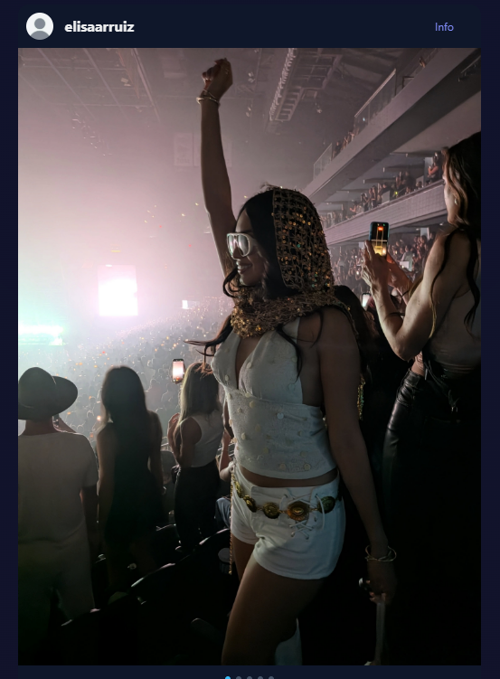
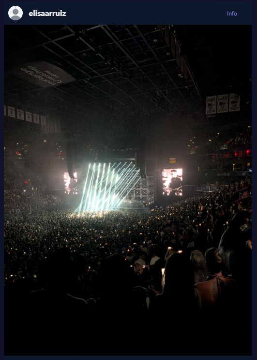
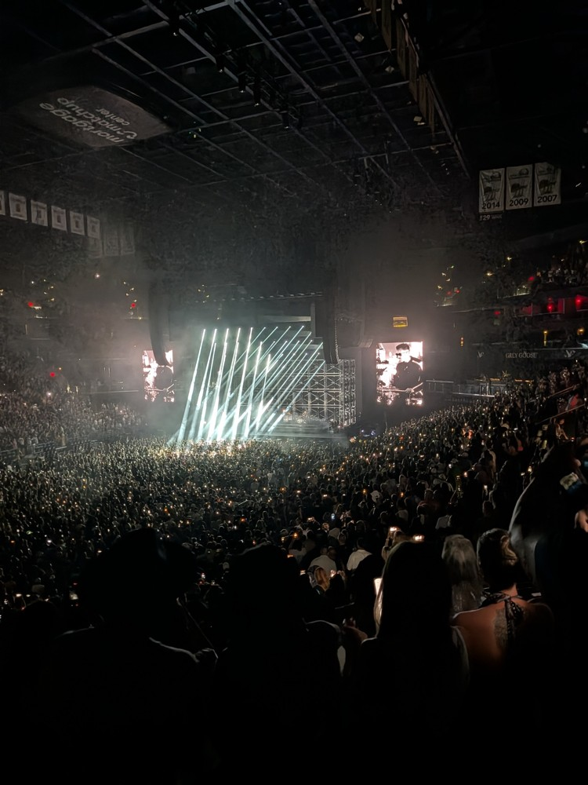
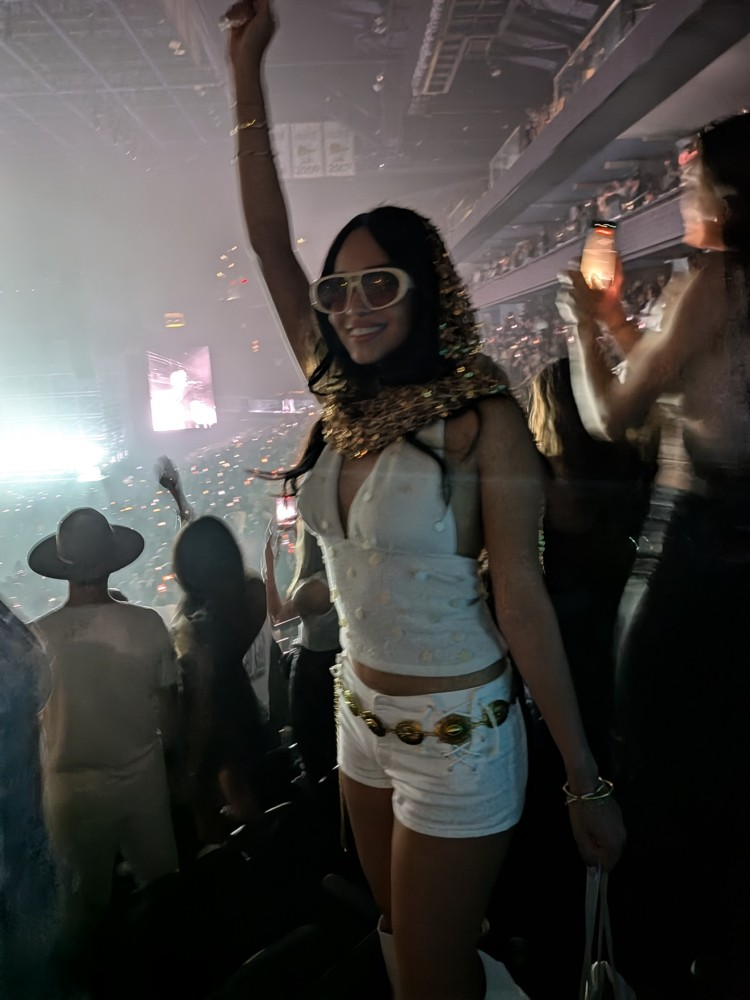
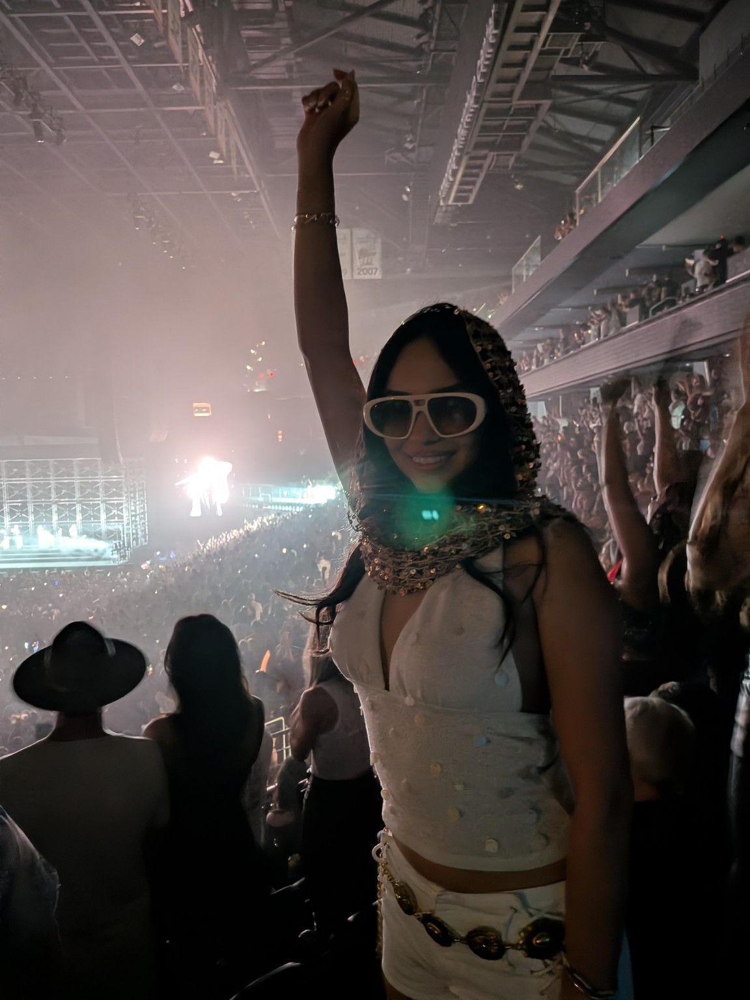
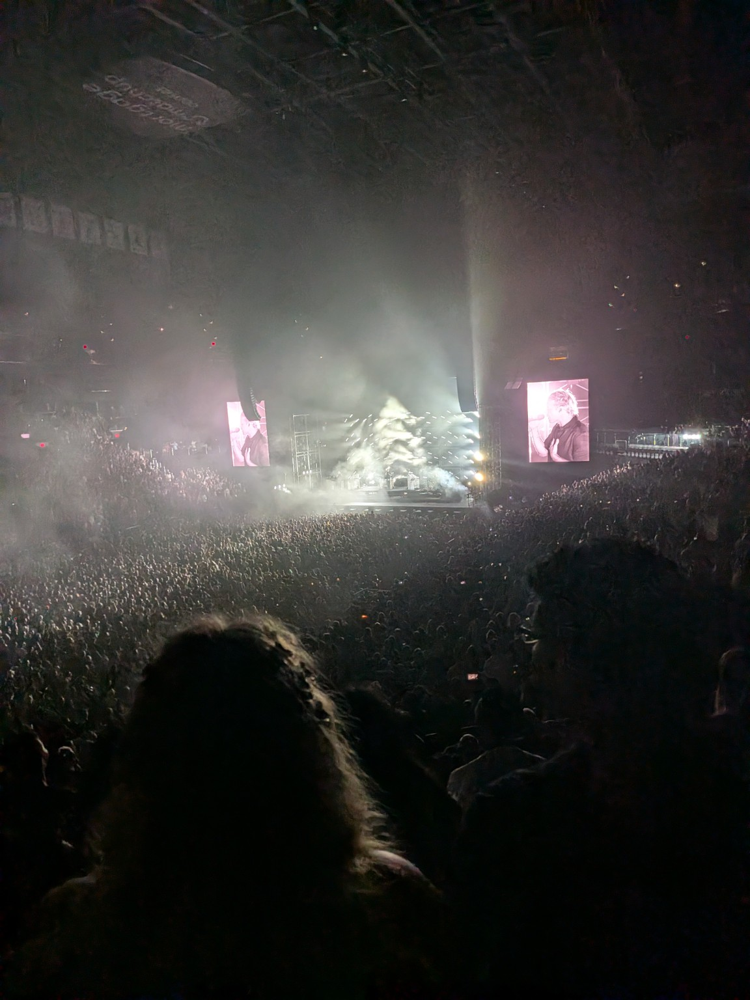

Visual match · 3 of 5
Same front-facing pose, raised arm, crowd and stage lighting.

Open source file
Claimant: Hassan A. Khalifeh · Reported account: @elisaarruiz · Updated 14 October 2026
Reported location supplied by claimant: https://www.instagram.com/p/DcUSi8NkuVm/
Full supplied screenshots are preserved below. Source previews are resized only for display; original source links are provided. “Visual match” means corresponding image content, not byte-identical files or proof of authorship by image matching alone. Slide positions are counted from visible pagination dots; no position is assigned when the indicator is missing or incomplete. Carousel URLs are claimant-supplied because these screenshots do not display the address bar.
| Screenshot | Position | Source | Finding |
|---|---|---|---|
| 120557 | 1 of 5 | R-01 | Visual match |
| 120617 | 3 of 5 | R-03 | Visual match |
| 120627 | Not visible | R-04 | Visual match |
| 120639 | 5 of 5 | R-02 | Visual match |
Same side-facing pose, raised arm, scarf and surrounding spectators.

Same front-facing pose, raised arm, crowd and stage lighting.
Same stage beam pattern, roof, screens and audience details; pagination is cropped out.


Same front-facing pose, scarf, raised arm and surrounding spectators.


Related reports: 1056378363907479 and 2649127802224453. This page supplements evidence; it does not change previously submitted form text.
Context only — not the reported images. These claimant-supplied photographs show related poses and views from the same scenes. They supplement the primary screenshot-to-source comparisons above and do not expand the four-photo claim. They are not represented as exact matches to the reported screenshots. Capture times and sequence order are not independently established by these uploads.


Supplement added 14 October 2026 (Arizona). Current report: 1533852605273433. Existing report URL and primary comparisons retained.